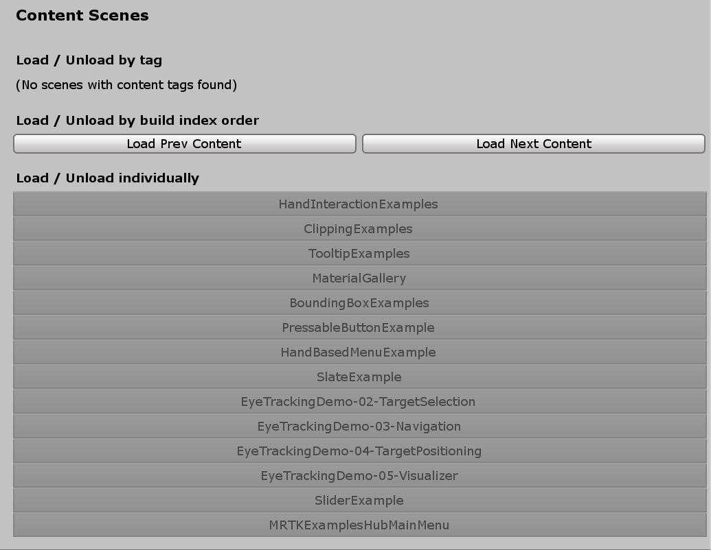
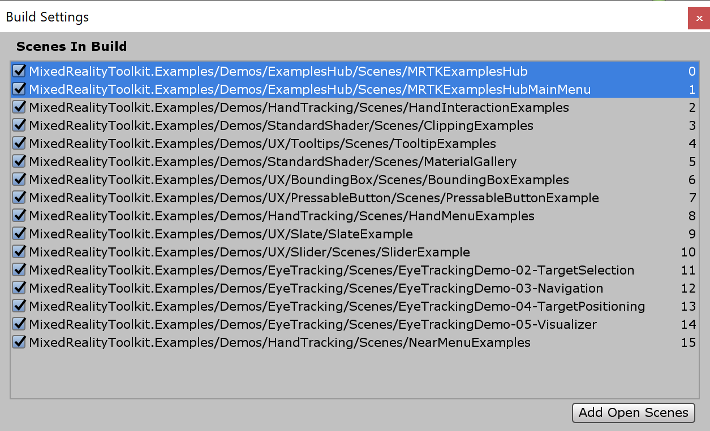

MRTK示例中心 MRTK Examples Hub

MRTKExamplesHub.unity is the container scene that has shared components including MixedRealityToolkit and MixedRealityPlayspace. MRTKExamplesHubMainMenu.unity scene has the cube buttons.
MRTK 示例中心是一个Unity场景，可以很容易地体验多个场景。使用MRTK的场景系统进行场景的加载和卸载。
MRTKExamplesHub.unity 是包含共享组件的容器场景，包括 MixedRealityToolkit和 MixedRealityPlayspace。 MRTKExamplesHubMainMenu.unity场景有立方体按钮。
先决条件
MRTK示例中心使用场景过渡服务和相关脚本。如果您通过Unity包使用MRTK，请导入 Microsoft.MixedReality.Toolkit.Unity.Extensions.x.x.x.unitypackage，它是发布包的一部分。如果您通过存储库克隆使用MRTK，那么您的项目中应该已经有了MRTK/Extensions文件夹。
MRTK示例中心场景和场景系统
打开位于MRTK/Examples/Experimental/Demos/ExamplesHub/Scenes/的 MRTKExamplesHub.unity，它是一个空场景，使用MixedRealityToolkit, MixedRealityPlayspace和LoadHubOnStartup。这个场景被配置为使用MRTK的场景系统。单击MixedRealityToolkit下的MixedRealitySceneSystem。它将在检查面板中显示场景系统的信息。

在检查面板的底部，它显示在场景系统配置文件中定义的场景列表。你可以点击场景名称来加载/卸载它们。

通过单击列表中的场景名称加载_MRTKExamplesHub_ 场景的示例。
加载_HandInteractionExamples_ 场景的示例.
 加载多个场景的示例.
加载多个场景的示例.
运行场景
这个场景在Unity的游戏模式和设备上都有效。在Unity编辑器中运行MRTKExamplesHub场景，并使用MRTK的输入模拟与场景内容交互。要构建和部署，只需构建MRTKExamplesHub 场景和场景系统列表中包含的其他场景。检查面板还可以很容易地向Building Settings添加场景。在Building Settings中，确保MRTKExamplesHub 场景位于列表的顶部索引为 0。
MRTKExamplesHub 如何加载一个场景
在MRTKExamplesHub场景中，你可以找到ExamplesHubButton 预制体。
在预置体中有一个FrontPlate对象，它包含了'Interactable。
使用可交互的 OnClick() 和 OnTouch()事件，它触发LoadContentScene脚本的LoadContent()函数。
在LoadContentScene脚本的检查面板中，可以定义要加载的场景名。

该脚本使用场景系统的LoadContent()函数来加载场景。 详情请参考 场景系统页面。
MixedRealityToolkit.SceneSystem.LoadContent(contentName, loadSceneMode);
返回到主菜单场景
要返回主菜单场景(MRTKExamplesHubMainMenu场景)，可以使用相同的场景系统 LoadContent()方法。ToggleFeaturesPanelExamplesHub.prefab提供了'Home'按钮，其中包含LoadContentScene脚本。使用这个预置或者在每个场景中提供一个自定义的home按钮来允许用户返回到主场景。可以把ToggleFeaturesPanelExamplesHub.prefab放在MRTKExamplesHub场景中使它始终可见，因为MRTKExamplesHub是一个共享的容器场景。确保隐藏/关闭ToggleFeaturesPanel.prefab 在每个示例场景。

添加额外的按钮
在CubeCollection 对象中，复制(或添加) ExampleHubButton 预制体并单击 GridObjectCollection中的Update Collection。
这将根据新的按钮总数更新柱面布局。
请参考对象集合页面了解更多细节。


在添加按钮之后，更新*LoadContentScene 脚本中的场景名称(上面解释过)。 添加额外的场景到场景系统的配置文件。